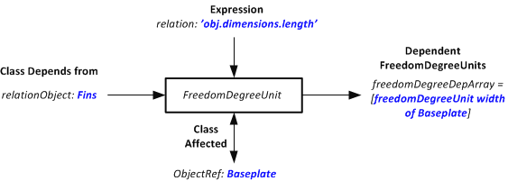
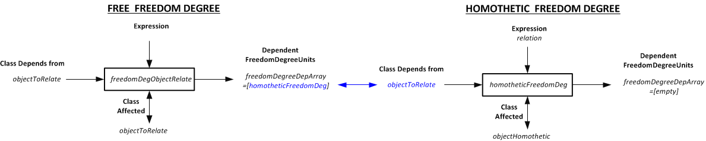
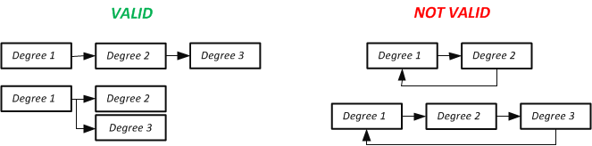

Freedom degree unit class
FreedomDegreeUnit is the basic class for the freedom degrees of a Comp3d.Component class. That is, each degree of freedom has it own separate FreedomDegreeUnit class.
FreedomDegreeUnit inputs
The class has a series of inputs that must be defined for each freedom degree
| Name | Name of the freedom degree |
|---|---|
| Unit | Unit of the freedom degree |
| lB | Lower bound of the freedom degree for the optimization |
| x0 | Starting value in an optimization for the freedom degree |
| uB | Upper bound of the freedom degree for the optimization |
| status | Defines the behaviour the freedom degree will
have during the optimization. It can take three different values:
|
| relation | Defines the homothetic relation for the freedom degree. IMPORTANT: the relation field must be defined in order to set the status property to "homothetic". |
| val | Defines the current actual value of the freedom degree which can be different from the x0 freedom degree |
How the homothetic relations works
When the "status" property is set to "homothetic" the freedom degree is dependent of another freedom degree which can be as well dependent on another and so forth. As shown in the following figure.
To deal with this kind of behaviour three additional properties are defined.
- objectRef: defines the object where the freedom degree is attached, that is which element contains this freedom degree and is going to be impacted by the freedom degree class. For example, if we are considering the number of turns of a certain inductor object, the inductor object is our "objectRef".
- relationObject: defines the object from which the object is dependent. It can be the same object, for example the length of a baseplate can depend on the width of the baseplate (length = 2* width) or it can depend on another different object. For example, the lenght of the baseplate may depend on the length of the fins. IMPORTANT: if the relationObject is different than objectRef, some methods of freedom degrees might become blocked.
- freedomDegreeDepArray: determines the freedomDegreeUnit classes that are dependent on the freedomDegreeUnit and that will be called each time the freedomDegree value changes
For example, let us consider in a heatsink the length of the baseplate that depends is the same as the length of the fins, and the width of the baseplate that is defined as 2 times the length of the baseplate.The schematic will rest as described by the following figure.
How to link freedom degrees
By default, the relationObj is considered the same as the objectRef, that is, we consider the relationship is set between freedom degrees of the same component.
However in some case the relation might be set between different components. The method to do so is called homotheticFreedomDeg.linkFreedomDegrees(homotheticFreedomDeg,objectToRelate)
After this instruction, the freedom degrees remain as follows.
Indeed, a link has been created between the freedom degrees, as a result, when the value of the free freedom degree changes the homothetic value is updated as well. The chain of relation is called sequentally and no loop can be established between objects
